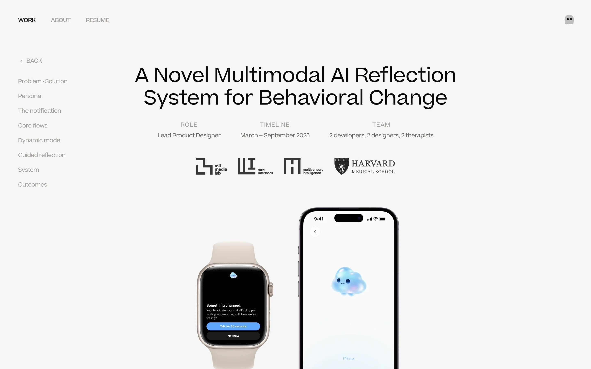

Hinting that scrolling up replays the intro
Each frame is the real Unwind hero (captured from the site at 1440×900) with the live voice band from braid.js. On the site, any of these would show only when you land on the hero after the intro, and stop once you have replayed it. Hover, click or scroll inside the frames to try them; the label text is editable.
Whisper caption
WatchA second after you land, one quiet line fades in under the band, then fades away for good. The band breathes a little while it is showing, so the words and the motion read as one thing.

Hover to replay
Hover or click the bandThe band behaves like a control: when the cursor reaches it, it swells, the cursor grows the way it does on links, and a small "Replay intro" pill drops under it. Clicking plays the zoom back to the stage.
Peek above
WatchLike a pull-to-refresh hint: the whole page eases down a few dozen pixels, showing the bottom of the phone from the intro hanging above the hero, then settles back. It shows there is something up there without saying so.
Rising wisps
WatchEvery few seconds a faint copy of the band lifts off and drifts up out of the top of the screen, and a hairline chevron above it glows as it passes. Direction without words: the voice came from up there.
Scroll intent
Scroll up inside the frameNothing shows until you scroll up. Then the band starts to grow toward the centre as the page gives way, with "Keep scrolling to replay" and a thin progress line in the band's colours. Let go early and it springs back; reach the end and the intro plays.